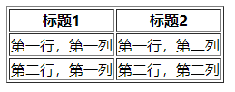

html标签元素
主根元素
<html>
表示一个HTML文档的根（顶级元素），所以它也被称为根元素。所有其他元素必须是此元素的后代。
文档元数据
元数据（Metadata）含有页面的相关信息，包括样式.脚本及数据，能帮助一些软件（例如
搜索引擎 (en-US).浏览器
等等）更好地运用和渲染页面。对于样式和脚本的元数据，可以直接在网页里定义，也可以链接到包含相关信息的外部文件。
- <base> 元素
指定用于一个文档中包含的所有相对 URL 的根 URL。一份中只能有一个 < head> 元素
规定文档相关的配置信息（元数据），包括文档的标题，引用的文档样式和脚本等。
- HTML外部资源链接元素
(<link>)
规定了当前文档与外部资源的关系。该元素最常用于链接样式表此外也可以被用来创建站点图标(比如PC端的“favicon”图标和移动设备上用以显示在主屏幕的图标)
。 - HTML <meta>
元素表示那些不能由其它 HTML
元相关（meta-related）元素（(base.link,
script.style 或
title）之一表示的任何Metadata信息。 -
HTML的<style>元素包含文档的样式信息或者文档的部分内容。默认情况下，该标签的样式信息通常是CSS的格式。
- HTML <title> 元素
定义文档的标题，显示在Browser的标题栏或标签页上。它只应该包含文本，若是包含有标签，则它包含的任何标签都将被忽略。
1 | <!DOCTYPE html> |
分区根元素
body
元素表示文档的内容。document.body
属性提供了可以轻松访问文档的 body 元素的脚本。
内容分区
1.区块定义
<section>元素表示一个包含在HTML文档中的独立部分，它没有更具体的语义元素来表示，一般来说会有包含一个标题，一组相似内容的排列组合。
2.标题标签
<h1>-<h6>
h为head的缩写，作为标题使用，并且根据重要性递减，突出文档内容。
1 | <h1>我是一级标签</h1> |
- 加了标题的文字会变得加粗，字号也会依次变大，每个标题独占一行。
- 一个网页中最好只应用一次h1标签，确保h1的唯一性，其他标签可能多次使用。
- 适当使用标题标签，有利于网页重点部分突出，同时利于搜索引擎排名，不可滥用。需要修改样式是可以通过css进行修改。
3.页眉页脚
<header>
元素用于展示介绍性内容，通常包含一组介绍性的或是辅助导航的实用元素。它可能包含一些标题元素，但也可能包含其他元素，比如
Logo.搜索框.作者名称，等等。常与导航元素一起使用。
<footer>
元素表示最近一个章节内容或者根节点（sectioning root
）元素的页脚。一个页脚通常包含该章节作者.版权数据或者与文档相关的链接等信息。
1 | <header> |
4.导航元素
<nav>
标签定义导航链接的部分。
并不是所有的 HTML 文档都要使用到 <nav>
元素。<nav> 元素只是作为标注一个导航链接的区域。
在不同设备上（手机或者PC）可以制定导航链接是否显示，以适应不同屏幕的需求。
1 | <nav> |
5.主要区域
<main> 元素呈现了文档的
body
或应用的主体部分。主体部分由与文档直接相关，或者扩展于文档的中心主题.应用的主要功能部分的内容组成。
6.内容区域
<article>元素表示文档.页面.应用或网站中的独立结构，其意在成为可独立分配的或可复用的结构，如在发布中，它可能是论坛帖子.杂志或新闻文章.博客.用户提交的评论.交互式组件，或者其他独立的内容项目。
7.附加区域
<aside>
元素表示一个和其余页面内容几乎无关的部分，被认为是独立于该内容的一部分并且可以被单独的拆分出来而不会使整体受影响。其通常表现为侧边栏或者标注框（call-out
boxes）。
8.信息标签
<address> 元素 表示其中的 HTML
提供了某个人或某个组织（等等）的联系信息。常和<foot>标签一起使用。
文本内容
使用 HTML 文本内容元素来组织在开标签
<body></body>
里的块或章节的内容。这些元素能标识内容的宗旨或结构，而这对于
accessibility 和 SEO 很重要。
1.通用容器
<div> 元素 (或 HTML 文档分区元素)
是一个通用型的流内容容器，在不使用CSS的情况下，其对内容或布局没有任何影响。不过有时候更倾向于使用有语义的标签，如内容分区内的一些标签。常用语语义不方便表达的地方。
<span>
元素是短语内容的通用行内容器，并没有任何特殊语义。可以使用它来编组元素以达到某种样式意图（通过使用类或者Id属性），或者这些元素有着共同的属性，比如lang。应该在没有其他合适的语义元素时才使用它。<span>
与 div 元素很相似，但 div 是一个 块元素而
<span> 则是 行内元素 。
2.描述列表
<dl> 元素
是一个包含术语定义以及描述的列表，通常用于展示词汇表或者元数据
(键-值对列表)。
<dt>
元素用于在一个定义列表中声明一个术语。该元素仅能作为
dl 的子元素出现。通常在该元素后面会跟着 dd
元素， 然而，多个连续出现的 <dt>
元素都将由出现在它们后面的第一个 dd 元素定义。
<dd> 元素用来指明一个描述列表
(dl)
元素中一个术语的描述。这个元素只能作为描述列表元素的子元素出现，并且必须跟在
dt 元素后边。
1 | <dl> |
3.有序列表
<ol>
元素表示有序列表，通常渲染为一个带编号的列表。
<li> 元素
用于表示列表里的条目。它必须包含在一个父元素里：一个有序列表(ol)，一个无序列表(ul)，或者一个菜单
(menu)。在菜单或者无序列表里，列表条目通常用点排列显示；在有序列表里，列表条目通常在左边显示按升序排列的计数，例如数字或者字母。
1 | <ol> |
4.无序列表
<ul>
元素表示一个内可含多个元素的无序列表或项目符号列表。
1 | <ul> |
5.段落相关
<p>
元素表示文本的一个段落。该元素通常表现为一整块与相邻文本分离的文本，或以垂直的空白隔离或以首行缩进。另外，<p>是块级元素。
<pre>元素表示预定义格式文本。在该元素中的文本通常按照原文件中的编排，以等宽字体的形式展现出来，文本中的空白符（比如空格和换行符）都会显示出来。(紧跟在
<pre> 开始标签后的换行符也会被省略)
<figure> 元素代表一段独立的内容,
经常与说明（caption） figcaption 配合使用,
并且作为一个独立的引用单元。当它属于主内容流（main
flow）时，它的位置独立于主体。这个标签经常是在主文中引用的图片，插图，表格，代码段等等，当这部分转移到附录中或者其他页面时不会影响到主体。
<figcaption> 元素
是与其相关联的图片的说明/标题，用于描述其父节点 figure
元素里的其他数据。这意味着 <figcaption>
在figure 块里是第一个或最后一个。同时 HTML Figcaption
元素是可选的；如果没有该元素，这个父节点的图片只是会没有说明/标题。
<hr>
元素表示段落级元素之间的主题转换（例如，一个故事中的场景的改变，或一个章节的主题的改变）。
<blockquote>
元素，代表其中的文字是引用内容。通常在渲染时，这部分的内容会有一定的缩进。若引文来源于网络，则可以将原内容的出处
URL 地址设置到 cite
特性上，若要以文本的形式告知读者引文的出处时，可以通过 cite
元素。
描述文本
<center> 对其包围的文本进行水平居中处理
<time> 标签定义日期或者时间
<abbr> 标签用于描述一个缩写内容。
<sub> 标签用于数字的下标内容
1 | 水的化学方程式为H<sub>2</sub>O |
<sup> 用于数字的上标内容
1 | 5的平方 5<sup>2</sup> |
内联文本语义
使用HTML内联文本语义，定义一个单词、一行内容，或任意文字的语义，结构或样式。基本上都是行内元素。
<a>
元素（或称锚元素）可以通过它的 href
属性创建通向其他网页、文件、同一页面内的位置、电子邮件地址或任何其他 URL
的超链接。
href：跳转地址
target:_blank 新窗口打开，_self当前窗口打开
title：链接提示文字
锚点链接
为元素添加id之后，在a标签中设置href属性即可跳转
下载文件
当href路径为一个文件链接时，可以进行下载，同时需要后端支持。
1 | <a href="www.baidu.com">百度一下</a> |
<b>特别提醒元素，用于文本加粗。与<strong>相同，但在语义上更建议使用<strong>。
<strong>表示文本十分重要，一般用粗体显示。
<mark> 用于凸显文本内容，类似马克笔。在字体上边涂黄。
<br>元素在文本生成一个换行符。
<code> 元素呈现一段计算机代码.
默认情况下, 它以浏览器的默认等宽字体显示。
<em>
标记出需要用户着重阅读的内容，
元素是可以嵌套的，嵌套层次越深，则其包含的内容被认定为越需要着重阅读，但是不会在浏览器中表现出来。
<i>
用于表现因某些原因需要区分普通文本的一系列文本，它的内容通常以斜体显示。
<s> 元素
使用删除线来渲染文本。使用 <s>
元素来表示不再相关，或者不再准确的事情。但是当表示文档编辑时，不提倡使用
<s> ；为此，提倡使用 del 和 ins 元素。
<small>元素將使文本的字体变小一号。在HTML5中，除了它的样式含义，这个元素被重新定义为表示边注释和附属细则，包括版权和法律文本。
<var>表示变量的名称或者用户提供的值。
图片和多媒体
<area>
在图片上定义一个热点区域，可以关联一个超链接，仅在<map>中使用。
<map> 属性 与 area
属性一起使用来定义一个图像映射(一个可点击的链接区域).
<audio>
元素用于在文档中嵌入音频内容。 <audio>
元素可以包含一个或多个音频资源， 这些音频资源可以使用 src 属性或者source
元素来进行描述：浏览器将会选择最合适的一个来使用。也可以使用 MediaStream
将这个元素用于流式媒体。
<video> 元素
用于在HTML或者XHTML文档中嵌入媒体播放器，用于支持文档内的视频播放。
<img>
元素将一份图像嵌入文档。
内嵌内容
<embed>
元素将外部内容嵌入文档中的指定位置。此内容由外部应用程序或其他交互式内容源（如浏览器插件）提供。
<object>
元素表示引入一个外部资源，这个资源可能是一张图片，一个嵌入的浏览上下文，亦或是一个插件所使用的资源。<param>元素为object元素定义参数.
<picture> 元素通过包含零或多个
source 元素和一个 img
元素来为不同的显示/设备场景提供图像版本。浏览器会选择最匹配的子
<source> 元素，如果没有匹配的，就选择
<img> 元素的 src
属性中的URL。然后，所选图像呈现在<img>元素占据的空间中。
脚本
canvas（绘制图形及图形动画），
noscript 当页面上的脚本类型不受支持或者在当前浏览器中关闭了脚本，则在html元素中定义脚本未被执行时的内容代替。
script
编辑标识
<del>标签表示一些被从文档中删除的文字内容。比如可以在需要显示修改记录或者源代码差异的情况使用这个标签。ins标签的作用恰恰于此相反：表示文档中添加的内容。
<ins>
元素定义已经被插入文档中的文本。
表格内容
<caption> 元素
展示一个表格的标题， 它常常作为 table
的第一个子元素出现，同时显示在表格内容的最前面，但是，它同样可以被CSS样式化，所以，它同样可以出现在任何一个一个相对于表格的做任意位置。
<col> 元素
定义表格中的列，并用于定义所有公共单元格上的公共语义。它通常位于colgroup元素内。
<colgroup>
标签用来定义表中的一组列表。
table 元素表示表格数据 —
即通过二维数据表表示的信息。
<td> 元素
定义了一个包含数据的表格单元格。
colspan：单元格合并。
<tfoot>
定义了一组表格中各列的汇总行。
<thead>元素定义了一组定义表格的列头的行。
<tr> 元素定义表格中的行。
同一行可同时出现td 和th 元素.

1 | <table border="1"> |
表单
HTML提供了许多可以一起使用的元素，这些元素能用来创建一个用户可以填写并提交到网站或者应用程序的表单。
<button>
表示一个可以点击的按钮，可以用在表单或者文档其他需要简单标准按钮的地方。
<datalist>元素包含了一组option元素，这些元素表示其它表单控件可选值。
<form> 元素表示文档中的一个区域，此区域包含交互控件，用于向
Web 服务器提交信息。
action：后台地址
method：提交方式，get 或者 post
<input> 元素用于为基于Web的表单创建交互式控件，以便接受来自用户的数据;
可以使用各种类型的输入数据和控件小部件，具体取决于设备和user agent。
- type 表单类型默认为 text，其他类型email，url，password，tel，search，hidden，submit
- name 后台接收字段名
- required 必须输入
- placeholder 提示文本内容
- value 默认值
- maxlength 允许最大输入字符数
- size 表单显示长度，一般用不使用而用 css 控制
- disabled 禁止使用，不可以提交到后台
- readonly 只读，可提交到后台
- capture 使用麦克风、视频或摄像头哪种方式获取手机上传文件，支持的值有 microphone, video, camera
- paddern:指定正则校验，也可以使用各种前端验证库。
<textarea> 元素表示一个多行纯文本编辑控件，当你希望用户输入一段相当长的、不限格式的文本。
<label> 元素（标签）表示用户界面中某个元素的说明。
元素用于表示其父元素 fieldset 的内容标题。
<meter>
元素用来显示已知范围的标量值或者分数值。
<optgroup> 为select 元素中的选项创建分组。
<option> ** 用于定义在 select, optgroup 或 datalist 元素中包含的项。<option> 可以在弹出窗口和
HTML 文档中的其他项目列表中表示菜单项。
<output> 标签表示计算或用户操作的结果。
<progress>元素用来显示一项任务的完成进度.虽然规范中没有规定该元素具体如何显示,浏览器开发商可以自己决定,但通常情况下,该元素都显示为一个进度条形式.
1 | <progress value="60" max="100">完成60%</progress> |
<select> 元素表示一个提供选项菜单的控件.
1 | <form action="" name="myForm"> |
1 | function submitMsg() { |